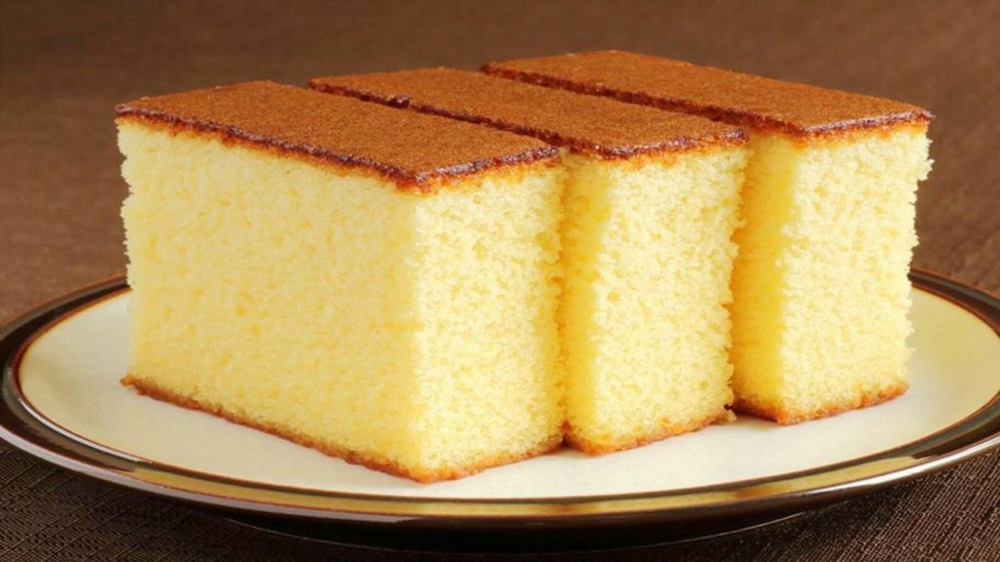

Vanilla cake Recipe
Indulge in a deliciously moist and flavorful Eggless Vanilla Cake. This simple recipe creates a light andairy cake without the need for eggs, perfect for satisfying any sweet craving.
Preparation time
- Prep Time: 10-15 minutes
- Cook Time: 30-35 minutes
- Serving: 8-10 slices
Ingredients
- 1 1/2 cups all-purpose flour
- 1 cup granulated sugar
- 1 teaspoon baking soda
- 1/2 teaspoon salt
- 1 cup water
- 1/3 cup vegetable oil
- 1 tablespoon white vinegar
- 1 teaspoon vanilla extract
Instructions
- Preheat your oven to 350°F (175°C). Grease and flour a 9-inch round cake pan or line it with parchment paper.
- In a large mixing bowl, sift together the flour, sugar, baking soda, and salt.
- In a separate bowl, mix together the water, vegetable oil, vinegar, and vanilla extract.
- Pour the wet ingredients into the dry ingredients and mix until well combined and smooth. Be careful not to overmix.
- Pour the batter into the prepared cake pan.
- Bake in the preheated oven for 30-35 minutes or until a toothpick inserted into the center of the cake comes out clean.
- Remove the cake from the oven and allow it to cool in the pan for 10 minutes.
- After 10 minutes, carefully remove the cake from the pan and transfer it to a wire rack to cool completely.
- Once cooled, you can frost or decorate the cake as desired.